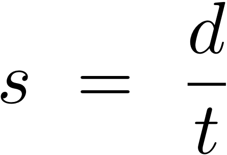
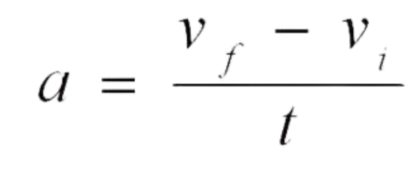

Speed is measured in km/h (Kilometers per hour) or m/s (meters per second)
Time is measured in s (seconds) or h (hours)
Distance is measured in km (kilometers) or m (meters)
What unit do you want your answer in?
(must use corresponding values to calculate, eg. for m/s, use seconds and meters)
How many digits do you want your answer rounded to? (between 0-100)
Speed
Time
Distance
Your ___ is ----

Acceleration is measured in m/s² (meters per second squared)
Time is measured in s (seconds)
Speed is measured in m/s (meters per second)
How many digits do you want your answer rounded to? (between 0-100)
Acceleration
Time
Initial Speed
Final Speed
Your ___ is ----Force is measured in N (newtons)
Mass is measured in kg (kilograms)
Acceleration is measured in m/s² (meters per second squared)
How many digits do you want your answer rounded to? (between 0-100)
Force
Mass
Acceleration
Your ___ is ----Work is measured in J (joules/newton meters)
Force is measured in N (newtons)
Distance is measured in m (meters)
Work can also be represented by the formula is "W=mad", with "m" meaning mass, "a" meaning acceleration, and "d" meaning distance.
How many digits do you want your answer rounded to? (between 0-100)
Work
Force
Distance
Your ___ is ----| Interactive Conversion Table | |||
|---|---|---|---|
| Unit | Symbol | Equivalent Unit | Symbol |
| 1 Kilometer | km | 1000 meters | m |
| 1 Kilogram | kg | 1000 Grams | g |
| 1 Minute | min | 60 Seconds | s |
| 1 Hour | h | 60 Minutes | min |
| 1 Kilometer Per Hour | km/h | 3.6 meters Per second | m/s |
| Value | Unit | To | Unit | Go! | Result |
| -> | ---- |